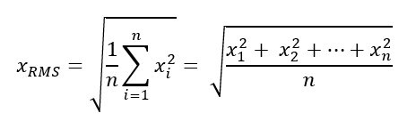

iTest User's Guide
The iTest data logging feature enables you to create, save, and use data files for reporting and analysis. Data logs are composed of three different parts: information from the data log editor, log order lists, and log header forms. Combined, these elements allow you to create logs customized for your testing needs. The first step to creating a data log is to define the log order list. You can then create a log header form and use the data log editor to combine the different parts that compose a data log.
You can access the Log Order Lists, Log Header Forms, Data Logs, and Blackbox Settings editors in SolutionBuilder by selecting Data Logging from SolutionBuilder's main menu.
Data Logging in SolutionBuilder
A log order list is a list of channels that are logged to the data file. Each row in the file defines a channel logged to the outputted data file.
 |
NOTE: | Log Order List files use the .lol extension and are stored, by default, in the $SUPPORTDIR/Data folder. This can be modified using the LogListFilePath powertek.ini setting; however, SolutionBuilder treats all files outside of the $SUPPORTDIR as read-only. |
The following steps define the process for developing in the log order list (LOL) file:
StdDev, Min, Max, Delta, CV, and RMS) by checking the checkbox in each column. For complete descriptions of these options, refer to the table below.The following right-click options are available:
Right-Click Options
| Option | Description | Shortcut Key |
| Left Pane | ||
|---|---|---|
| Add | Adds a new log order list. | - |
| Remove | Removes the selected log order list. | - |
| Rename... | Launches the Rename dialog, allowing you to rename the log order list. | - |
| Duplicate | Duplicates the selected log order list. | - |
| Cut | Removes the selected log order list and copies it to the clipboard. | - |
| Copy | Copies the selected log order list to the clipboard. | - |
| Pastes | Pastes the copied log order list. | - |
| Undo | Undoes the last action. | - |
| Redo | Redoes the last undone action. | - |
| Editor | ||
| Insert Before | Launches the Channel Selection dialog, allowing you to select the channel(s) to add to the log order list. These channels are added before the highlighted row. | - |
| Add to End | Launches the Channel Selection dialog, allowing you to select the channel(s) to add to the log order list. These channels are added to the end of the list. | - |
| Delete | Deletes the highlighted row(s) from the log order list. | Delete |
| Move Up | Moves the selected row up in the log order list. | - |
| Move Down | Moves the selected row down in the log order list. | - |
| Copy | Copies the selected channel to the clipboard. | Ctrl + C |
| Paste | Pastes the copied channel to the Channel cell value. | Ctrl + V |
| Undo | Undoes the last action. | Ctrl + Z |
| Redo | Redoes the last undone action. | Ctrl + Y |
| Show Alias/Customer Name | Displays either the Alias or Customer Name column. | - |
| Find | Launches the Find dialog, allowing you to search for specific text within the log order list. Check the Match whole word checkbox to search for only standalone occurrences of the whole string. Check the Match case checkbox to search for only standalone occurrences with the matching case-sensitivity of the entered string. | Ctrl + F |
LOL Editor Descriptions
| Column | Description |
| Channel | Displays a list of channels to select from. This channel will be added to the outputted data file. Note: The value entered in this field reflects what is displayed. If the customer name is entered it will display the customer name. This column is sortable. |
| Alias/Customer Name | Indicates the selected channel's alias or customer name. You can change the column type by right-clicking anywhere within the editor and selecting the option Show Customer Name/ Show Alias, as applicable. This column is read-only and cannot be edited. Information will be automatically populated in this column, depending on the channel name selected. |
| Module ID | Indicates the module ID to which the channel belongs. This column is read-only and cannot be edited. |
| StdDev | Computes the standard deviation over the average period. In the data file, the StdDev column is labeled as <channelname>_STDDev. |
| Min | Computes the minimum value detected during the average period. In the data file, the Min column is labeled as <channelname>_Min. |
| Max | Computes the maximum value detected during the average period. In the data file, the Max column is labeled as <channelname>_Max. |
| Delta | Displays the difference between the channel value at the start of the log and the channel value at the end of the log. In the data file, the Delta column is labeled as <channelname>_Delta. |
| CV | The coefficient of variance. In the data file, the CV column is labeled as <channelname>_CV. |
| RMS | The root mean squared. The CV column is labeled as <channelname>_RMS. The formula is:  |
| Data Quality | Enables the logging of high and low data quality values. This adds two new columns to the outputted data file labeled: <channelname>_DQHigh and <channelname>_DQLow. To use this feature, high and low data quality must be enabled for the specified channel via the Edit Channel dialog. If this has not been set up, the checkbox in this column will be disabled. For more information, refer to the iTest Data Quality documentation. |
|
NOTE: | The statistical values are meaningful only for average logs. Snapshot and transient logs ignore the statistics columns. |
The Blackbox.lol file is a special Log Order List file used specifically for the Blackbox logging feature in iTest. Due to the requirements necessary for Blackbox data logging to succeed, there are a number of differences enforced by the LOL editor.
Blackbox LOL Editor
The properties for the Blackbox.lol file can be managed using the Blackbox Settings editor. For more information, refer to the Blackbox Settings section below.
Log header forms are used to define the list of channels that appear at the top of the data file known as the header. They can also be used to present a dialog to the operator before starting a test, prompting them to enter data. The log header form is created using the Log Header Forms editor in SolutionBuilder. The log header form files are referred to as user variable list files (UVL) and use the .uvl extension.
|
NOTE: | Log header form files are stored, by default, in the $SUPPORTDIR/Varlists folder. This can be modified using the UserVariableListPath powertek.ini setting, but SolutionBuilder treats all files outside of the $SUPPORTDIR as read-only. |
To add a new log header, do the following:
Log Header Form (UVL) Editor Descriptions
| Field | Description |
| Channel | Add a new channel by typing the channel name or right-clicking the channel cell and selecting Select Channel (this opens the Channel Select dialog). The channel selected in this field is written to the data file's header. Array channels: Array channels can be referenced with or without a static index. If the array channel in the UVL file has no index specified, then it will use the index passed to the STARTLOG command. |
| Type | Indicates how the channel is used and where it is saved. Click the type cell to open the drop-down menu. Values include: Header: The Header selection saves the channel to the master.ini file and the RDB. It is visible and editable in the dialog that appears before the operator. Hidden: When this option is selected, the channel is saved and visible in the data file header. It is not visible in the dialog that appears before the operator. Read-Only: When the Read-Only option is selected, the channel is visible in the data file header. It is also visible in the dialog that appears before the operator; however, it is not editable. Control: This selection causes the channel to appear in the dialog that appears before the operator but does not display in the data file header. |
| Format | Specifies the format of the collected data. Click the format cell to open the drop-down menu. Format types include: String: Sequence of text characters. Number: Numeric values. Memo: Functions similarly to string. This is a legacy field and is generally no longer used. Label: Provides a header row, enabling you to section off parts of the form. A Label format does not add an entry to the data file header, regardless of what is defined in the Type column. Note: This is only relevant when using the $NEWFORM mailslot message. Empty: Creates an empty, full-width space for formatting. An Empty format will not add an entry to the data file header, regardless of what is defined in the Type column. |
| Len | The maximum number of characters that can be entered in the field. For numeric entries, the decimal point counts against this total. |
| Dec | The decimal precision for numeric entry fields. |
| Picklist | Enables you to select a picklist from which the user can select an option from a drop-down list. |
| Column Number | Indicates the column you are putting the header prompt in (label/prompt and entry field, if applicable). 1 = left column, 2 = right column, 3 = spans both columns. This field is only relevant when using the $NEWFORM mailslot message. |
| Form Record | An obsolete feature. Do not use. |
| Prompt | Provides an alternative string prompt for the operator. |
The Data Log editor utilizes log order list and log header form files to define the details of the outputted data file. You can use the editor to set the log type, data filename, pre/post logging actions, and more.
To use the Data Log Editor, do the following:
Data Log Editor Descriptions
| Value | Description |
| Duration | The duration is only applicable for transient and average logs. The value defines the duration of the transient log or the amount of time to average for an average log. The value in this field can be set to a channel or number. If the duration is set to a channel name, the channel's value is read when the log starts; after it is started, the value no longer affects the data log. When using a parameterized duration, if the channel value is <= 0 when the log begins, the duration value will default to 1 second. |
| Log Order List | The Log Order List (LOL) file contains the list of channels logged to the file. Use this field to select a specific LOL file or to log all channels. |
| Log Type | The log type defines how data is obtained over the course of a running test. There are three options than can be selected for use, including: Average: Records the average values for selected channels over a defined period of time and rate, as well as other optional statistics. Snapshot: Records a single instance of the selected channels. Transient: Continuously records selected channels for a defined period of time and rate. |
| Name | The name of the data log. For SolutionBuilder, the name is configured using the Name column. For Test Manager, the name is configured using the Rename... right-click option. |
| Output Filename | This is the name of the outputted file that data is written to. The name can be a constant name or it can vary based on the value of another iTest channel through the use of substitution. Note that including a subfolder structure as part of the output file name is not supported. This file will always be located in the current project folder. For example, a constant data filename would take the name entered in this field followed by the .dat file type (e.g., myfilename.dat). To create a variable outputted filename, embed an iTest filename in this field using the < and > characters as follows: %ExampleDataFileName>%_Avg.dat. When the log is created, iTest replaces the string %<ExampleDataFileName>% with the value of the channel when the data log is initiated. If the value of ExampleDataFileName is MyLog, the outputted filename would be MyLog_Avg.dat. |
| Output Type | Defines the data file type. Snapshot and average logs are outputted as DAT files. Transient logs can be outputted as DAT, BIN, MDF, or MDF Multi-rate file types. |
| Pre-Log Actions* | Pre-log actions are mailslot messages sent prior to starting the data log. You can define up to three pre-log actions. |
| Post-Log Actions* | Post-log actions are mailslot messages sent after the output file has been created. You can define up to three post-log actions. |
| Rate | The rate is only applicable for transient and average logs. The value defines the rate (in Hz) that data is sampled at. This field can be set to a channel or a number. If the rate is set to a channel name, the channel's value is read when the log starts. After the log starts, this value will no longer affect the data log. The value can also be set to a number less than 1. For example, if the value is set to 0.5, data will be logged once every two seconds. When using a parameterized rate, if the channel value is <= 0 when the log begins, the rate value will default to 0.1 Hz. |
| Time Align Channels | This option enables you to time align channels with transport delay for transient logs. This feature causes all channels that are configured with a transport delay time to be delayed by the number of seconds in the Transport Delay column of the channel definition editor. This is designed to time-shift slow data such as emissions and allow it to align with instantaneous data such as speed and torque. The resolution of time is dependent on system scan rate for your system. For 100 Hz systems, you can enter a minimum value of .01. |
| UVL File | The UVL or log header form file that is used to create the header of the data log. The header is a set of name=value pairs located at the top of the data file. The header is only created the first time a data log file is created and it is never updated after the initial creation. |
| Wait Channel | This feature enables you to synchronize mailslot actions with the start of the log. Example: If the mailslot actions command the emissions bench device or other subsystems to prepare for logging, then this channel can be set to a non-zero value when those tasks are complete. The log will then wait for the value to become non-zero before starting the data log. For SolutionBuilder, the Wait Channel is configured in the Wait Channel column. For Test Manager, the Wait Channel is configured in the Channel to wait for before logging starts field under the Pre-Log Actions. |
* For more information, refer to the Defining Log Actions section below.
You can define up to three pre-log actions and up to three post-log actions. These actions are mailslot messages that are sent prior to starting the data log. When configuring the actions, the Actions dialog displays. This dialog is similar to the MessagesEditor; however, it allows you to define up to three mailslot messages at once.
Actions Dialog
Data Logs can be filtered into four categories using the filter options provided in the left pane of the Data Log editor. The categories include All, Average, Snapshot, and Transient. When a filter option is applied, then data logs of that type will appear in the right pane of the editor as well as the pertinent data log settings. For example, if the Average filter option was applied, then any Average type logs will be listed and the following data log settings will appear as columns in the editor: Name, Log Type, Output Type, Rate (Hz), Duration, LOL, Output Filename, Pre Log Action, Post Log Action, Wait Channel, and UVL File. Selecting All as the filter option will display all data logs and settings available. If a data log setting is not applicable based on a data log's type, then that field will be read-only when using the All filter option.
|
NOTE: | When adding a new data log, a basic data log will be created with a log type based on the current filter. For example, if the Average filter option is applied, then adding a new data log will create a basic Average log. If the All filter is applied, then a basic Snapshot log will be created. |
Average Data Logs
The following right-click options are available:
Right-Click Options
| Option | Description | Shortcut Key |
| Select Channel | Opens the Channel Selection dialog to select a channel. This option is enabled when right-clicking in the Rate, Duration, and Wait Channel columns. | - |
| Add to End | Adds a new data log to the end of the list. | - |
| Delete | Deletes the selected data log. | - |
| Cut | Removes the selected cells and copies them to the clipboard. | Ctrl + X |
| Copy | Copies the selected cells to the clipboard. | Ctrl + C |
| Paste | Pastes the copied cells. | Ctrl + V |
| Undo | Undoes the previous action. | Ctrl + Z |
| Redo | Redoes the last undone action. | Ctrl + Y |
The Blackbox Settings editor is used to manage the properties of the Blackbox.lol file. To configure these properties, select Data Logging > Blackbox Settings in SolutionBuilder and use the descriptions provided in the table below.
Blackbox Settings Editor
Blackbox Settings
| Setting | Description |
| Log on limits enable, trigger on limit violation | When selected, automated Blackbox logging is enabled. In addition, the Pre-trigger and Post-trigger fields are enabled. When automated Blackbox logging is enabled, iTest will automatically create a Blackbox log file when a channel limit is exceeded. For more information, refer to the Automated Blackbox Logging documentation. |
| Pre-trigger | The number of seconds to save before the limit violation. This field is enabled when the Log on limits enable, trigger on limit violation option is selected. The maximum time is 60 seconds if the rate is 1000 Hz; otherwise, the maximum is 3600 seconds. |
| Post-trigger | The number of seconds to save after the limit violation. This field is enabled when the Log on limits enable, trigger on limit violation option is selected. The maximum time is 60 seconds if the rate is 1000 Hz; otherwise, the maximum is 3600 seconds. |
| Log on CRS_CONTROL=1, trigger on CRS_CONTROL=0 | When selected, Blackbox logging is active when CRS_CONTROL=1. In addition, the File Size field is enabled. |
| File Size | Specify the time in minutes over which the Blackbox collects data. Because the Blackbox is a circular file, it overwrites data at the beginning of the file once this value is exceeded. The default time is 5 minutes. The maximum time is 2 minutes if the rate is 1000 Hz; otherwise, the maximum is 60 minutes. This field is enabled when the Log on CRS_CONTROL=1, trigger on CRS_CONTROL=0 option is selected. |
| Save black box on new project creation | When selected, the Blackbox data file is copied from the previous project when a new project is created. A new project is created by sending the DataArchive New mailslot message to create a new data folder (project). iTest then copies the old Blackbox file from the previous project. If limits are disabled and Blackbox was running due to limit violation, then a truncated Blackbox file is saved (rather than cancelation of the Blackbox). |
| Rate | Specify how often (in Hz) to take a Blackbox log. The higher the number, the more often data is taken. The default is 10 Hz. The list will only include the 1000 Hz option if Support1kHz=TRUE is set in the powertek.ini file. |